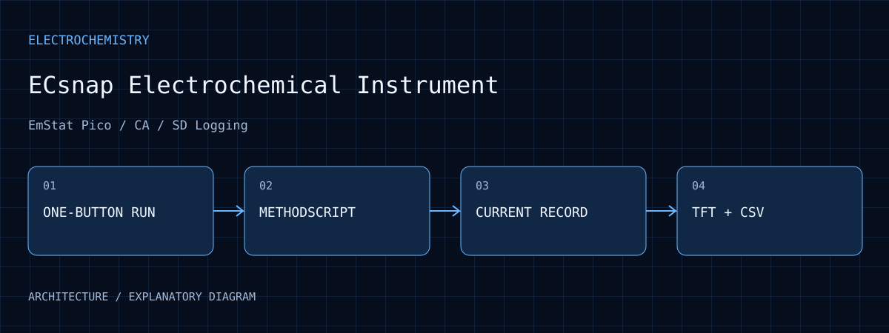
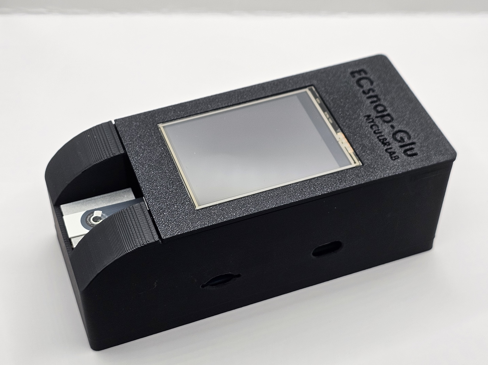

Instrument integration
The project organizes the EmStat Pico, controller, TFT and microSD into one operating and data workflow.
ECsnap Electrochemical Instrument
An EmStat Pico, MCU, TFT, and microSD instrument with a single-button workflow for stabilization, chronoamperometry, status feedback, and CSV recording.

01 / PURPOSE
Make electrochemical current measurements easier to operate and record in a portable research instrument.
02 / ARCHITECTURE
EmStat Pico executes electrochemical methods and exchanges data with the controller over MethodSCRIPT/UART.
Firmware organizes start, stabilization and completion states and parses returned current and status.
A TFT presents the current stage and data so waiting and completion are distinguishable.
RAM buffering and shared-SPI management coordinate TFT updates and microSD CSV recording.
03 / WORKFLOW
One button enters the defined method and makes the operation traceable as instrument state.
Schedule stabilization and chronoamperometry while receiving serial measurement data.
Convert valid responses into display and recording items while coordinating storage.
Keep the CSV for later time-series inspection and analysis.
04 / EVIDENCE
The project organizes the EmStat Pico, controller, TFT and microSD into one operating and data workflow.
Research includes migration from SAMD21 to nRF52840, covering serial parsing, peripheral management and storage.
Prototype imagery and architecture explain integration. Concentration calibration depends on the specified analyte and experimental method.

Instrument photograph from the owner-provided presentation. Display, enclosure and electrode interface are visible; the photo does not establish concentration calibration.
Open full size ↗05 / ANALYSIS
Electrochemical operation includes waiting as well as acquisition. Status helps distinguish an unstarted method, stabilization and a missing saved record.
TFT refresh and SD writes compete for SPI service. Buffering and batch writes help coordinate acquisition reception with display work.
A recorded current trace still needs blanks, standards and defined electrode conditions before concentration or detection performance can be assessed.
06 / REPRODUCE
07 / LIMITS
Research code is private. Current acquisition and concentration conversion are separate tasks; complete analyte calibration and diagnostic performance are not claimed.
08 / SOURCES
Selected images retain their visual content. Captions distinguish prototype photographs, application interfaces, archived records, analysis and simulations.